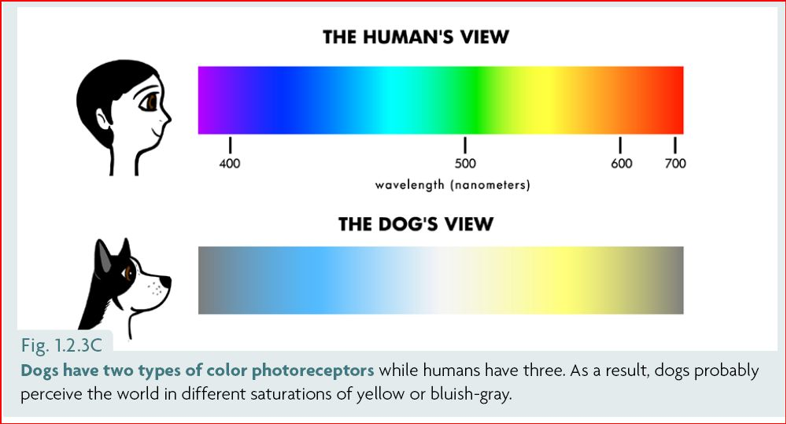
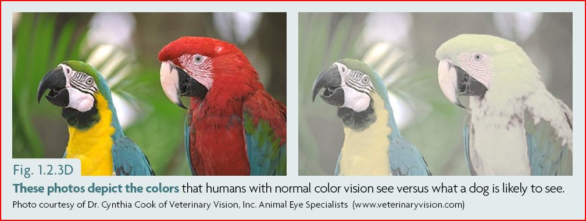

Μπορούν οι σκύλοι να δουν χρώματα; Τι σημαίνει αυτό για την εκπαίδευσή τους;
Στις αρχές του 1980, πραγματοποιήθηκαν δοκιμές στο Ινστιτούτο Ηθολογίας του Cambridge, ώστε να ξεκαθαριστεί αν οι σκύλοι έχουν αχρωματοψία, όπως υποστήριζε η κοινή γνώμη.
Τα αποτελέσματα των πειραμάτων, έδειξαν πως μπορούν να διαχωρίσουν κάποια χρώματα, αλλά δεν μπορούν να διακρίνουν μερικά άλλα. Δεν έχουν πλήρη αχρωματοψία (να βλέπουν δηλαδή μόνο αποχρώσεις του γκρι). Μπορούν να αναγνωρίσουν τα χρώματα, απλά όχι σε όλο τους το φάσμα. Ωστόσο, δεν ξεκαθαρίστηκε εάν η χρωματική διάκριση στην όρασή τους, οφειλόταν στην διαφοροποίηση μεταξύ πραγματικών χρωμάτων ή διάφορων αποχρώσεων του γκρι. Πιο σύγχρονες μελέτες και ευρήματα, έχουν φέρει στο φως απαντήσεις για αυτά τα ερωτήματα.
Τα μάτια, περιέχουν φωτοαπορροφητικά κύτταρα (κωνία), που αντιδρούν στο χρώμα. Οι οφθαλμοί των κυνοειδών, έχουν λιγότερα κωνία από τους ανθρώπινους, οπότε εύλογα προκύπτει ότι η όρασή τους είναι αδύνατο να είναι τόσο καλή όσο η δική μας.
Για να δούμε χρώματα, χρειάζονται διάφορα είδη κωνίων, ικανά να εντοπίσουν διαφορετικά μήκη κύματος φωτός. Έχουμε τρία είδη κωνίων, γεγονός που επιτρέπει στα μάτια μας, να καταγράφουν αυτό που αποκαλούμε πλήρες φάσμα της ορατότητας του χρώματος. Στα τέλη του 1980, ερευνητές του Πανεπιστημίου της Καλιφόρνιας στην Santa Barbara, εξέτασαν επίσης τη χρωματική όραση των σκύλων. Οι μελέτες τους, επιβεβαίωσαν πως οι σκύλοι αναγνωρίζουν τα χρώματα, όχι όμως τόσο διαφοροποιημένα όσο οι άνθρωποι. Για εμάς, το ουράνιο τόξο είναι ιώδες, γαλάζιο, γαλαζοπράσινο, πράσινο, κίτρινο, πορτοκαλί και κόκκινο. Οι σκύλοι όμως, το βλέπουν ως σκούρο και ανοιχτό μπλε, γκρι, ανοιχτό και σκούρο κίτρινο και πολύ σκουρόχρωμο γκρι. Το ιώδες χρώμα το βλέπουν ως μπλε (όπως πολλοί άνθρωποι).
Μελέτες που πραγματοποίησαν Ρώσοι επιστήμονες, απέδειξαν πως οι σκύλοι διακρίνουν τα χρώματα από τις αυξομειώσεις της φωτεινότητας. Έχουν διχρωματική όραση, που σημαίνει ότι τα μάτια τους περιέχουν δύο είδη κωνίων. Ταυτοποιούν οποιοδήποτε χρώμα καταγράψουν, με όχι περισσότερα από δύο είδη καθαρού φασματικού φωτός. Τα περισσότερα πλακούντια θηλαστικά, έχουν διχρωματική όραση. Η ικανότητά τους να αναγνωρίζουν τα απαραίτητα μήκη κύματος για την διάκριση του κόκκινου και του πράσινου, φαίνεται να έχει εξασθενίσει κατά την διαδικασία της εξέλιξής τους, πιθανά κατά την Τριαδική περίοδο. Η διχρωματική όραση, συμβάλλει στην ικανότητα διάκρισης του χρώματος σε συνθήκες χαμηλού φωτισμού, ευνοώντας έτσι τα περισσότερα νυκτόβια ζώα. Στην τριχρωματική όραση, όπως των ανθρώπων, υπάρχουν τρία κωνία ανίχνευσης χρώματος (μπλε, πράσινο και κόκκινο) ώστε να μπορούμε να ξεχωρίσουμε έως και 100 διαφορετικούς χρωματικούς τόνους. Οι μέλισσες έχουν επίσης τριχρωματική όραση και μπορούν να καταγράψουν το έντονο ιώδες, το μπλε και το πράσινο αντί του μπλε, του πράσινου και του κόκκινου.
Ο όρος αχρωματοψία είναι επομένως, λίγο αποπροσανατολιστικός. Κάποια ζώα, έχουν αναπτύξει την ικανότητα να βλέπουν μερικά χρώματα και κάποια άλλα να βλέπουν διαφορετικά χρώματα. Όλα, καθορίστηκαν από τις μεταλλάξεις που συνέβησαν και τα πλεονεκτήματα και μειονεκτήματα που προέκυψαν από τη κάθε στρατηγική εξέλιξης στον αγώνα για επιβίωση.
Τι σημαίνει αυτό για την επικοινωνία μας με τους σκύλους και την εκπαίδευσή τους;
Άνθρωπος = A + C. Σκύλος = B + D. Είναι δύσκολο για τους σκύλους να διακρίνουν μεταξύ του κόκκινου και του πράσινου.
Εφόσον οι σκύλοι δυσκολεύονται στον διαχωρισμό κάποιων πράσινων και κόκκινων αποχρώσεων (όπως και αρκετοί άνθρωποι), καλό θα ήταν να επιλέγουμε παιχνίδια και εκπαιδευτικά εργαλεία σε άλλα χρώματα. Για παράδειγμα, το ανοιχτό μπλε ή το κίτρινο είναι χρώματα που ο σκύλος μπορεί να διακρίνει ευκολότερα. Από την άλλη, όταν η εκπαίδευση αφορά ασκήσεις ανίχνευσης οσμής, μπορούμε να χρησιμοποιούμε στόχους με χρώματα που είναι δύσκολο να δουν, ώστε να τους αναγκάσουμε να χρησιμοποιήσουν την όσφρηση και όχι την όρασή τους.

We bring you 'knowledge to everyone... everywhere'. You practise it with 'kindness to everyone... everywhere'. Thus, we are changing the world - a tiny drop at the time, filling the beck that runs to the river that flows into the ocean.
— Roger Abrantes
Join the Ethology Institute community today!
Read more about our courses and certification programs
Αρθρογράφος : R. A. Abrantes
Μετάφραση : Δέσποινα Τρίτση
Επιμέλεια κειμένου : Ελένη Χούμη